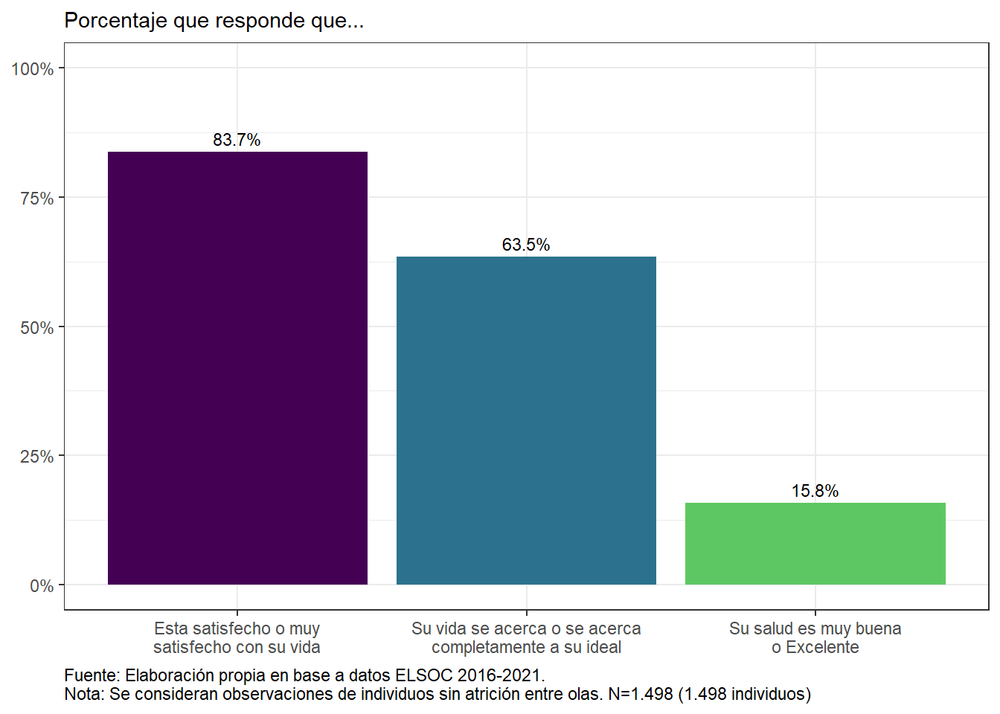
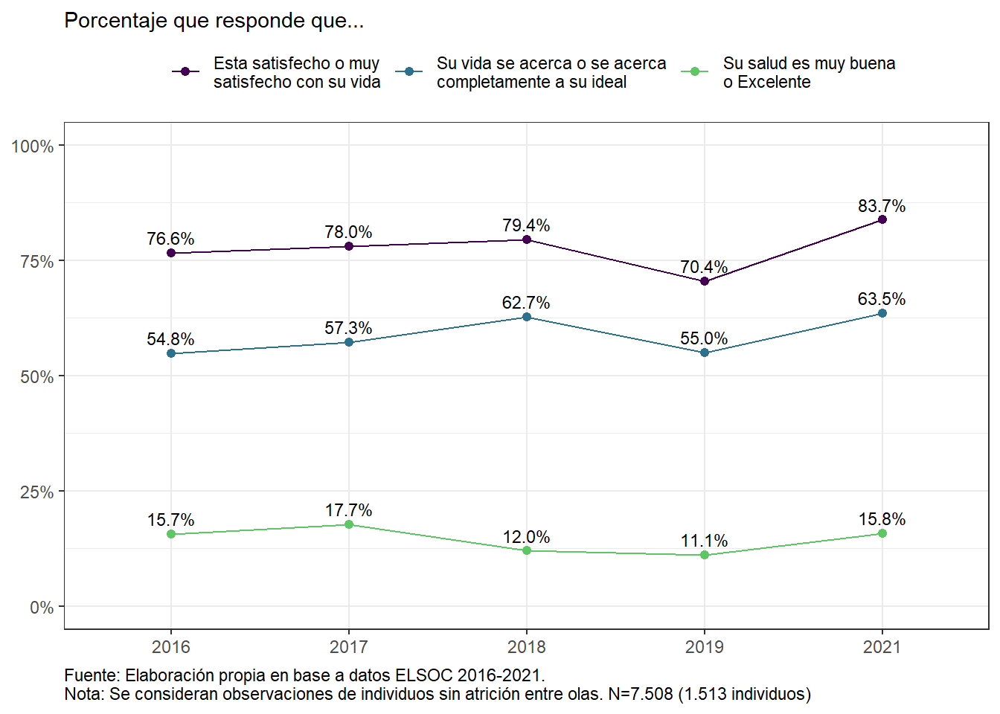
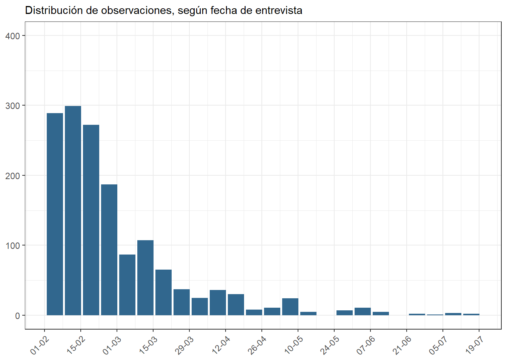

Capítulo 3 Temas de salud mental y bienestar
3.1 Salud mental y bienestar de la población
3.1.1 ¿Cómo se encuentra, y cómo ha cambiado la salud mental y nivel de bienestar de la población?
Figura 3.1: Satisfacción con la vida y salud subjetiva (ola 2021)
Figura 3.2: Satisfacción con la vida y salud subjetiva, según ola
3.1.2 Sintomatología depresiva
Figura 3.3: Porcentaje que presenta síntomas de depresión (2021)

Figura 3.4: Satisfacción con la vida y salud subjetiva (ola 2021), según Sintomas de depresión

Figura 3.5: Porcentaje que presenta síntomas de depresión, según ola

Figura 3.6: Cambios en síntomas depresivos entre 2016 y 2021

## Model 1: llik = -7678.53 ... best llik = -7678.53
## Model 2: llik = -7678.53 ... best llik = -7678.53
## Model 3: llik = -7678.53 ... best llik = -7678.53
## Model 4: llik = -7678.53 ... best llik = -7678.53
## Model 5: llik = -7678.53 ... best llik = -7678.53
## Model 6: llik = -7678.53 ... best llik = -7678.53
## Model 7: llik = -7678.53 ... best llik = -7678.53
## Model 8: llik = -7678.53 ... best llik = -7678.53
## Model 9: llik = -7678.53 ... best llik = -7678.53
## Model 10: llik = -7678.53 ... best llik = -7678.53
## Model 11: llik = -7678.53 ... best llik = -7678.53
## Model 12: llik = -7678.53 ... best llik = -7678.53
## Model 13: llik = -7678.53 ... best llik = -7678.53
## Model 14: llik = -7678.53 ... best llik = -7678.53
## Model 15: llik = -7678.53 ... best llik = -7678.53
## Model 16: llik = -7678.53 ... best llik = -7678.53
## Model 17: llik = -7678.53 ... best llik = -7678.53
## Model 18: llik = -7678.53 ... best llik = -7678.53
## Model 19: llik = -7678.53 ... best llik = -7678.53
## Model 20: llik = -7678.53 ... best llik = -7678.53
## Model 21: llik = -7678.53 ... best llik = -7678.53
## Model 22: llik = -7678.53 ... best llik = -7678.53
## Model 23: llik = -7678.53 ... best llik = -7678.53
## Model 24: llik = -7678.53 ... best llik = -7678.53
## Model 25: llik = -7678.53 ... best llik = -7678.53
## Model 26: llik = -7678.53 ... best llik = -7678.53
## Model 27: llik = -7678.53 ... best llik = -7678.53
## Model 28: llik = -7678.53 ... best llik = -7678.53
## Model 29: llik = -7678.53 ... best llik = -7678.53
## Model 30: llik = -7678.53 ... best llik = -7678.53
## Conditional item response (column) probabilities,
## by outcome variable, for each class (row)
##
## $depr_w01
## Pr(1) Pr(2) Pr(3) Pr(4)
## class 1: 0.7539 0.1988 0.0268 0.0205
## class 2: 0.3698 0.4209 0.1859 0.0233
## class 3: 0.1015 0.2695 0.2650 0.3639
##
## $depr_w02
## Pr(1) Pr(2) Pr(3) Pr(4)
## class 1: 0.8017 0.1803 0.0077 0.0103
## class 2: 0.3348 0.4460 0.1511 0.0681
## class 3: 0.1347 0.2180 0.2856 0.3617
##
## $depr_w03
## Pr(1) Pr(2) Pr(3) Pr(4)
## class 1: 0.7248 0.2206 0.0314 0.0232
## class 2: 0.2506 0.5583 0.1509 0.0402
## class 3: 0.0611 0.1205 0.3761 0.4423
##
## $depr_w04
## Pr(1) Pr(2) Pr(3) Pr(4)
## class 1: 0.6584 0.3173 0.0173 0.0070
## class 2: 0.1479 0.5579 0.2084 0.0859
## class 3: 0.0581 0.2247 0.2910 0.4263
##
## $depr_w05
## Pr(1) Pr(2) Pr(3) Pr(4)
## class 1: 0.7877 0.1816 0.0221 0.0086
## class 2: 0.2989 0.5197 0.1417 0.0396
## class 3: 0.1098 0.1522 0.3377 0.4003
##
## Estimated class population shares
## 0.43 0.4224 0.1476
##
## Predicted class memberships (by modal posterior prob.)
## 0.418 0.4471 0.1348
##
## =========================================================
## Fit for 3 latent classes:
## =========================================================
## number of observations: 1409
## number of estimated parameters: 47
## residual degrees of freedom: 976
## maximum log-likelihood: -7678.53
##
## AIC(3): 15451.06
## BIC(3): 15697.84
## G^2(3): 933.4583 (Likelihood ratio/deviance statistic)
## X^2(3): 1017.919 (Chi-square goodness of fit)
## ## Model 1: llik = -7650.908 ... best llik = -7650.908
## Model 2: llik = -7650.908 ... best llik = -7650.908
## Model 3: llik = -7650.908 ... best llik = -7650.908
## Model 4: llik = -7662.969 ... best llik = -7650.908
## Model 5: llik = -7650.908 ... best llik = -7650.908
## Model 6: llik = -7650.908 ... best llik = -7650.908
## Model 7: llik = -7650.908 ... best llik = -7650.908
## Model 8: llik = -7650.908 ... best llik = -7650.908
## Model 9: llik = -7650.908 ... best llik = -7650.908
## Model 10: llik = -7650.908 ... best llik = -7650.908
## Model 11: llik = -7650.908 ... best llik = -7650.908
## Model 12: llik = -7650.908 ... best llik = -7650.908
## Model 13: llik = -7650.908 ... best llik = -7650.908
## Model 14: llik = -7650.908 ... best llik = -7650.908
## Model 15: llik = -7650.908 ... best llik = -7650.908
## Model 16: llik = -7650.908 ... best llik = -7650.908
## Model 17: llik = -7662.969 ... best llik = -7650.908
## Model 18: llik = -7650.908 ... best llik = -7650.908
## Model 19: llik = -7650.908 ... best llik = -7650.908
## Model 20: llik = -7650.908 ... best llik = -7650.908
## Model 21: llik = -7650.908 ... best llik = -7650.908
## Model 22: llik = -7650.908 ... best llik = -7650.908
## Model 23: llik = -7662.969 ... best llik = -7650.908
## Model 24: llik = -7650.908 ... best llik = -7650.908
## Model 25: llik = -7650.908 ... best llik = -7650.908
## Model 26: llik = -7650.908 ... best llik = -7650.908
## Model 27: llik = -7662.969 ... best llik = -7650.908
## Model 28: llik = -7662.969 ... best llik = -7650.908
## Model 29: llik = -7650.908 ... best llik = -7650.908
## Model 30: llik = -7650.908 ... best llik = -7650.908
## Conditional item response (column) probabilities,
## by outcome variable, for each class (row)
##
## $depr_w01
## Pr(1) Pr(2) Pr(3) Pr(4)
## class 1: 0.0965 0.4336 0.3526 0.1174
## class 2: 0.1319 0.2353 0.2155 0.4173
## class 3: 0.4820 0.3874 0.1218 0.0088
## class 4: 0.7895 0.1636 0.0215 0.0253
##
## $depr_w02
## Pr(1) Pr(2) Pr(3) Pr(4)
## class 1: 0.0671 0.4219 0.2915 0.2195
## class 2: 0.1759 0.1973 0.2783 0.3485
## class 3: 0.4640 0.4037 0.0920 0.0403
## class 4: 0.8425 0.1445 0.0043 0.0087
##
## $depr_w03
## Pr(1) Pr(2) Pr(3) Pr(4)
## class 1: 0.0177 0.4666 0.3784 0.1372
## class 2: 0.0879 0.0800 0.3347 0.4974
## class 3: 0.3721 0.5125 0.0856 0.0299
## class 4: 0.7698 0.1758 0.0303 0.0240
##
## $depr_w04
## Pr(1) Pr(2) Pr(3) Pr(4)
## class 1: 0.0699 0.5225 0.3417 0.0659
## class 2: 0.0558 0.1079 0.2791 0.5572
## class 3: 0.2245 0.5543 0.1425 0.0787
## class 4: 0.7319 0.2616 0.0065 0.0000
##
## $depr_w05
## Pr(1) Pr(2) Pr(3) Pr(4)
## class 1: 0.1435 0.4573 0.3301 0.0691
## class 2: 0.1102 0.0898 0.2832 0.5169
## class 3: 0.4012 0.4777 0.0916 0.0295
## class 4: 0.8395 0.1357 0.0178 0.0070
##
## Estimated class population shares
## 0.1324 0.1071 0.429 0.3315
##
## Predicted class memberships (by modal posterior prob.)
## 0.1221 0.1043 0.445 0.3286
##
## =========================================================
## Fit for 4 latent classes:
## =========================================================
## number of observations: 1409
## number of estimated parameters: 63
## residual degrees of freedom: 960
## maximum log-likelihood: -7650.908
##
## AIC(4): 15427.82
## BIC(4): 15758.61
## G^2(4): 878.2131 (Likelihood ratio/deviance statistic)
## X^2(4): 975.5108 (Chi-square goodness of fit)
## ## Model 1: llik = -7631.281 ... best llik = -7631.281
## Model 2: llik = -7638.028 ... best llik = -7631.281
## Model 3: llik = -7631.281 ... best llik = -7631.281
## Model 4: llik = -7638.923 ... best llik = -7631.281
## Model 5: llik = -7638.923 ... best llik = -7631.281
## Model 6: llik = -7636.256 ... best llik = -7631.281
## Model 7: llik = -7631.454 ... best llik = -7631.281
## Model 8: llik = -7631.728 ... best llik = -7631.281
## Model 9: llik = -7635.919 ... best llik = -7631.281
## Model 10: llik = -7635.919 ... best llik = -7631.281
## Model 11: llik = -7631.728 ... best llik = -7631.281
## Model 12: llik = -7631.728 ... best llik = -7631.281
## Model 13: llik = -7636.256 ... best llik = -7631.281
## Model 14: llik = -7638.923 ... best llik = -7631.281
## Model 15: llik = -7631.728 ... best llik = -7631.281
## Model 16: llik = -7636.038 ... best llik = -7631.281
## Model 17: llik = -7636.256 ... best llik = -7631.281
## Model 18: llik = -7636.256 ... best llik = -7631.281
## Model 19: llik = -7635.919 ... best llik = -7631.281
## Model 20: llik = -7631.281 ... best llik = -7631.281
## Model 21: llik = -7636.945 ... best llik = -7631.281
## Model 22: llik = -7631.728 ... best llik = -7631.281
## Model 23: llik = -7636.256 ... best llik = -7631.281
## Model 24: llik = -7631.454 ... best llik = -7631.281
## Model 25: llik = -7636.256 ... best llik = -7631.281
## Model 26: llik = -7631.728 ... best llik = -7631.281
## Model 27: llik = -7631.728 ... best llik = -7631.281
## Model 28: llik = -7631.281 ... best llik = -7631.281
## Model 29: llik = -7638.923 ... best llik = -7631.281
## Model 30: llik = -7631.956 ... best llik = -7631.281
## Conditional item response (column) probabilities,
## by outcome variable, for each class (row)
##
## $depr_w01
## Pr(1) Pr(2) Pr(3) Pr(4)
## class 1: 0.1322 0.2634 0.2068 0.3976
## class 2: 0.0760 0.4463 0.3583 0.1194
## class 3: 0.0847 0.0000 0.8358 0.0795
## class 4: 0.5408 0.4592 0.0000 0.0000
## class 5: 0.7846 0.1605 0.0290 0.0259
##
## $depr_w02
## Pr(1) Pr(2) Pr(3) Pr(4)
## class 1: 0.1615 0.1977 0.2792 0.3616
## class 2: 0.0871 0.3906 0.3000 0.2223
## class 3: 0.2414 0.5504 0.1773 0.0310
## class 4: 0.4788 0.3904 0.0860 0.0447
## class 5: 0.8403 0.1456 0.0046 0.0095
##
## $depr_w03
## Pr(1) Pr(2) Pr(3) Pr(4)
## class 1: 0.0720 0.0856 0.3500 0.4924
## class 2: 0.0000 0.4265 0.4529 0.1206
## class 3: 0.4535 0.4856 0.0000 0.0609
## class 4: 0.3246 0.5458 0.1018 0.0278
## class 5: 0.7893 0.1619 0.0243 0.0245
##
## $depr_w04
## Pr(1) Pr(2) Pr(3) Pr(4)
## class 1: 0.0474 0.1387 0.2795 0.5344
## class 2: 0.0673 0.5539 0.3587 0.0202
## class 3: 0.1483 0.4994 0.2280 0.1244
## class 4: 0.2380 0.5519 0.1329 0.0771
## class 5: 0.7243 0.2658 0.0098 0.0000
##
## $depr_w05
## Pr(1) Pr(2) Pr(3) Pr(4)
## class 1: 0.1152 0.1015 0.2845 0.4987
## class 2: 0.0901 0.5170 0.3877 0.0051
## class 3: 0.3973 0.4502 0.0296 0.1229
## class 4: 0.4022 0.4656 0.1065 0.0257
## class 5: 0.8349 0.1429 0.0145 0.0077
##
## Estimated class population shares
## 0.116 0.1002 0.0714 0.3799 0.3326
##
## Predicted class memberships (by modal posterior prob.)
## 0.1079 0.0901 0.0703 0.3974 0.3343
##
## =========================================================
## Fit for 5 latent classes:
## =========================================================
## number of observations: 1409
## number of estimated parameters: 79
## residual degrees of freedom: 944
## maximum log-likelihood: -7631.281
##
## AIC(5): 15420.56
## BIC(5): 15835.36
## G^2(5): 838.9586 (Likelihood ratio/deviance statistic)
## X^2(5): 932.0486 (Chi-square goodness of fit)
## ## Nclases AIC BIC Nobs Chisq
## 1 3 15451.06 15697.84 1409 1017.9194
## 2 4 15427.82 15758.61 1409 975.5108
## 3 5 15420.56 15835.36 1409 932.0486


En 2021 no hay hombres en la categoría Trabajo doméstico no remunerado \(^{*}\)
3.2 Parte economía:


3.3 COVID - 19


3.3.1 Cuarentenas



3.4 Estrés Financiero

(#fig:clase.sub-benef.estatal)Porcentaje que accedió a beneficios y retiro del 10%


3.5 Distanciamiento y comportamiento prosocial en pandemia
Figura 3.7: ¿En qué medida usted ha seguido la recomendación de quedarse en su hogar, manteniendo el aislamiento social? (2021).

3.6 Situación económica
## Model 1: llik = -10005.1 ... best llik = -10005.1
## Model 2: llik = -10005.1 ... best llik = -10005.1
## Model 3: llik = -10005.1 ... best llik = -10005.1
## Model 4: llik = -10005.1 ... best llik = -10005.1
## Model 5: llik = -10005.1 ... best llik = -10005.1
## Model 6: llik = -10005.1 ... best llik = -10005.1
## Model 7: llik = -10005.1 ... best llik = -10005.1
## Model 8: llik = -10005.1 ... best llik = -10005.1
## Model 9: llik = -10005.1 ... best llik = -10005.1
## Model 10: llik = -10005.1 ... best llik = -10005.1
## Conditional item response (column) probabilities,
## by outcome variable, for each class (row)
##
## $quintil
## Pr(1) Pr(2) Pr(3) Pr(4) Pr(5)
## class 1: 0.0482 0.2604 0.2171 0.3296 0.1447
## class 2: 0.0000 0.0179 0.0000 0.0699 0.9122
## class 3: 0.4758 0.3486 0.1326 0.0430 0.0000
##
## $clase_sub
## Pr(1) Pr(2) Pr(3) Pr(4) Pr(5)
## class 1: 0.0327 0.3107 0.4757 0.1752 0.0057
## class 2: 0.0000 0.1157 0.3801 0.4445 0.0597
## class 3: 0.1711 0.4143 0.3251 0.0675 0.0221
##
## $egp07
## Pr(1) Pr(2) Pr(3) Pr(4) Pr(5) Pr(6) Pr(7)
## class 1: 0.0688 0.2311 0.1586 0.1014 0.0665 0.1411 0.2324
## class 2: 0.4510 0.2986 0.0609 0.0886 0.0423 0.0587 0.0000
## class 3: 0.0000 0.0453 0.1371 0.1340 0.0125 0.1233 0.5479
##
## Estimated class population shares
## 0.4584 0.1282 0.4135
##
## Predicted class memberships (by modal posterior prob.)
## 0.4436 0.1295 0.4269
##
## =========================================================
## Fit for 3 latent classes:
## =========================================================
## number of observations: 2216
## number of estimated parameters: 44
## residual degrees of freedom: 130
## maximum log-likelihood: -10005.1
##
## AIC(3): 20098.21
## BIC(3): 20349.16
## G^2(3): 169.1765 (Likelihood ratio/deviance statistic)
## X^2(3): 158.0922 (Chi-square goodness of fit)
## ## Model 1: llik = -9990.661 ... best llik = -9990.661
## Model 2: llik = -9990.657 ... best llik = -9990.657
## Model 3: llik = -9990.661 ... best llik = -9990.657
## Model 4: llik = -9990.658 ... best llik = -9990.657
## Model 5: llik = -9990.662 ... best llik = -9990.657
## Model 6: llik = -9990.661 ... best llik = -9990.657
## Model 7: llik = -9990.823 ... best llik = -9990.657
## Model 8: llik = -9995.184 ... best llik = -9990.657
## Model 9: llik = -9990.657 ... best llik = -9990.657
## Model 10: llik = -9990.661 ... best llik = -9990.657
## Conditional item response (column) probabilities,
## by outcome variable, for each class (row)
##
## $quintil
## Pr(1) Pr(2) Pr(3) Pr(4) Pr(5)
## class 1: 0.0000 0.0166 0.0000 0.0979 0.8855
## class 2: 0.2382 0.2909 0.1975 0.2072 0.0662
## class 3: 0.4777 0.3309 0.1322 0.0574 0.0019
## class 4: 0.0000 0.2811 0.2178 0.3324 0.1687
##
## $clase_sub
## Pr(1) Pr(2) Pr(3) Pr(4) Pr(5)
## class 1: 0.0000 0.1019 0.3889 0.4503 0.0589
## class 2: 0.0000 0.0000 0.6437 0.3315 0.0248
## class 3: 0.2074 0.5281 0.2462 0.0000 0.0183
## class 4: 0.0392 0.4153 0.4236 0.1220 0.0000
##
## $egp07
## Pr(1) Pr(2) Pr(3) Pr(4) Pr(5) Pr(6) Pr(7)
## class 1: 0.4487 0.3032 0.0630 0.0866 0.0442 0.0543 0.0000
## class 2: 0.0291 0.1170 0.2130 0.1546 0.0206 0.0403 0.4255
## class 3: 0.0000 0.0479 0.1265 0.1259 0.0153 0.1319 0.5526
## class 4: 0.0782 0.2666 0.1308 0.0824 0.0834 0.1984 0.1601
##
## Estimated class population shares
## 0.1324 0.2056 0.3556 0.3064
##
## Predicted class memberships (by modal posterior prob.)
## 0.1408 0.2518 0.333 0.2744
##
## =========================================================
## Fit for 4 latent classes:
## =========================================================
## number of observations: 2216
## number of estimated parameters: 59
## residual degrees of freedom: 115
## maximum log-likelihood: -9990.657
##
## AIC(4): 20099.31
## BIC(4): 20435.82
## G^2(4): 140.2862 (Likelihood ratio/deviance statistic)
## X^2(4): 132.7403 (Chi-square goodness of fit)
## ## Model 1: llik = -9982.355 ... best llik = -9982.355
## Model 2: llik = -9982.52 ... best llik = -9982.355
## Model 3: llik = -9981.093 ... best llik = -9981.093
## Model 4: llik = -9981.196 ... best llik = -9981.093
## Model 5: llik = -9981.062 ... best llik = -9981.062
## Model 6: llik = -9980.962 ... best llik = -9980.962
## Model 7: llik = -9980.548 ... best llik = -9980.548
## Model 8: llik = -9982.067 ... best llik = -9980.548
## Model 9: llik = -9981.097 ... best llik = -9980.548
## Model 10: llik = -9981.576 ... best llik = -9980.548
## Conditional item response (column) probabilities,
## by outcome variable, for each class (row)
##
## $quintil
## Pr(1) Pr(2) Pr(3) Pr(4) Pr(5)
## class 1: 0.0000 0.0366 0.0000 0.0846 0.8788
## class 2: 0.0000 0.3287 0.2196 0.3091 0.1425
## class 3: 0.2423 0.3451 0.2092 0.2035 0.0000
## class 4: 0.1179 0.0687 0.1397 0.2699 0.4038
## class 5: 0.4900 0.3189 0.1300 0.0584 0.0027
##
## $clase_sub
## Pr(1) Pr(2) Pr(3) Pr(4) Pr(5)
## class 1: 0.0000 0.1110 0.3188 0.4959 0.0743
## class 2: 0.0431 0.4371 0.4047 0.1152 0.0000
## class 3: 0.0000 0.1059 0.5490 0.3019 0.0431
## class 4: 0.0113 0.1055 0.6505 0.2327 0.0000
## class 5: 0.2191 0.5076 0.2624 0.0000 0.0109
##
## $egp07
## Pr(1) Pr(2) Pr(3) Pr(4) Pr(5) Pr(6) Pr(7)
## class 1: 0.5039 0.1723 0.0961 0.0909 0.0596 0.0772 0.0000
## class 2: 0.0818 0.2367 0.1359 0.0816 0.0923 0.2373 0.1343
## class 3: 0.0000 0.0000 0.2667 0.1702 0.0339 0.0430 0.4862
## class 4: 0.0998 0.5681 0.0375 0.0964 0.0000 0.0000 0.1981
## class 5: 0.0000 0.0452 0.1189 0.1222 0.0118 0.1316 0.5703
##
## Estimated class population shares
## 0.1112 0.2668 0.1737 0.1154 0.333
##
## Predicted class memberships (by modal posterior prob.)
## 0.1097 0.2319 0.2365 0.0984 0.3236
##
## =========================================================
## Fit for 5 latent classes:
## =========================================================
## number of observations: 2216
## number of estimated parameters: 74
## residual degrees of freedom: 100
## maximum log-likelihood: -9980.548
##
## AIC(5): 20109.1
## BIC(5): 20531.15
## G^2(5): 120.0671 (Likelihood ratio/deviance statistic)
## X^2(5): 108.8985 (Chi-square goodness of fit)
## ## Nclases AIC BIC Nobs Chisq
## 1 3 20098.21 20349.16 2216 158.0922
## 2 4 20099.31 20435.82 2216 132.7403
## 3 5 20109.10 20531.15 2216 108.8985